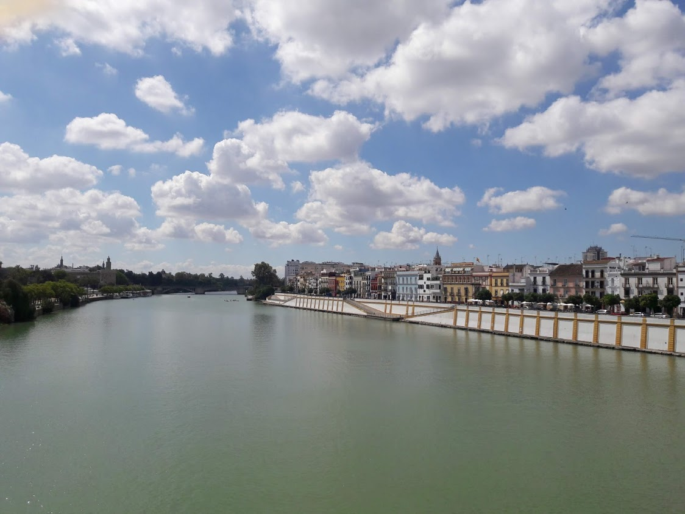

Sevilla is located on the Rio Guadalquivir and home to famous Moorish Architecure of the Alcázar. The Cathderal is an impressive sight notwithstanding the Giralda Tower. With an average temperature of 35 degrees in summer you will be glad of the canopies which are placed above the streets during summer, not forgetting spray which can be found at the terrace of many restaurants!
View GallerySevilla Blog
Cathedral
The largest Cathedral in the world, on a technicality, this former mosque was converted into a cathedral in the 12th century. Adjacent to the Alcázar, queues form early and it is worth buying tickets in advance. It is possible to go up the ramps of the Giralda tower for some impressive views of the city.

Alcázar
The Alcázar is the royal palace of Sevilla and incorporates the palace and walled gardens. Its a good idea to get tickets in advance here and expect to stay a couple of hours.

Plaza de España
Plaza de España is situated in the Maria Luisa Park and gardens and the buildings are accessible by bridges over a moat. The walls of the plaza represent all the provinces of Spain which are depicted by coloured tiles. Plaza de España has also been used a filming location over the years.
